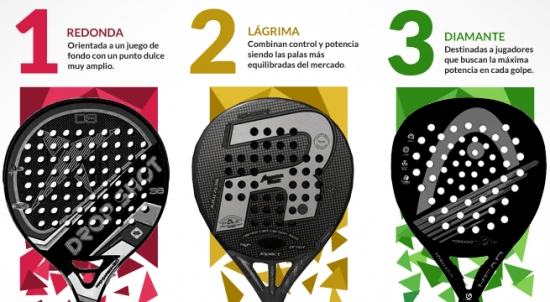
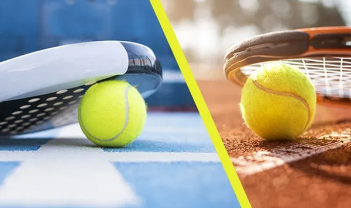
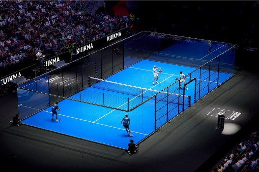
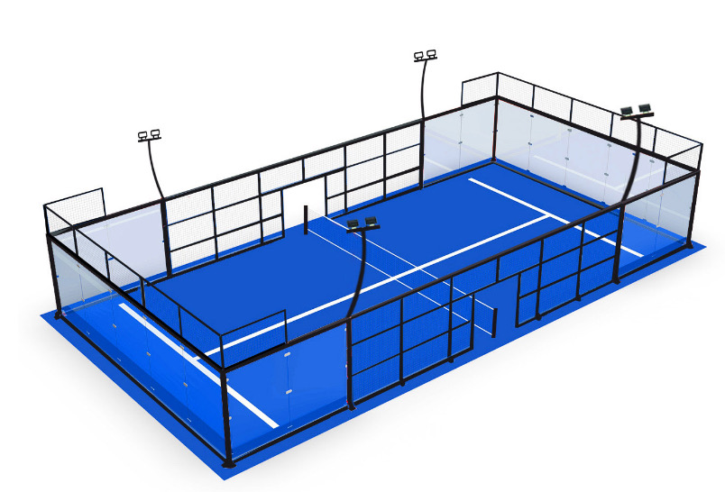
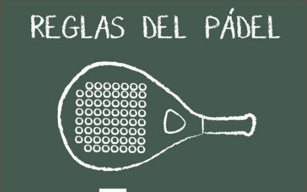
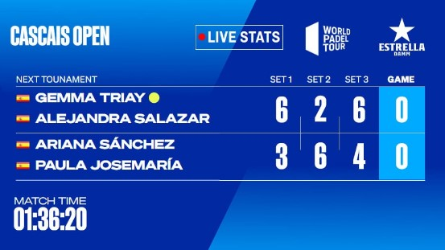

El padel es un deporte de raqueta que mezcla tenis y fronton. Es jugado en una cancha más pequeña, rodeada de paredes, permitiendo que la pelota rebote. Es muy popular en España y América Latina, y está creciendo globalmente.
Paleta:
Las paletas de pádel son sólidas, sin cuerdas, y tienen perforaciones en la superficie. Son más pequeñas y ligeras que las de tenis. El peso está entre 350 y 400 gramos, y la forma puede ser redonda, de lágrima o diamante, lo que afecta el control y la potencia.
Pelota:
La pelota es similar a la de tenis, pero suele tener menos presión, lo que la hace rebotar un poco menos
Jugadores en cancha:
Se juega mayoritariamente en dobles (dos jugadores por equipo), aunque también existen variantes individuales (menos comunes).
Cancha:
La cancha mide 10 metros de ancho por 20 metros de largo y está rodeada por paredes de vidrio o malla en el fondo y los laterales. El área está dividida por una red similar a la de tenis, aunque más baja. Las paredes permiten que la pelota rebote y siga en juego, lo que le da una dinámica interesante al partido.
Reglas básicas:
El servicio debe ser de abajo hacia arriba, golpeando la pelota por debajo de la cintura y enviándola en diagonal al campo contrario. La pelota puede rebotar una vez en el piso antes de ser devuelta, pero también puede golpear las paredes de cristal o en la malla antes de cruzar la red, siempre y cuando haya picado la pelota en el piso antes que en la pared. Los jugadores pueden usar las paredes para hacer que la pelota vuelva al campo contrario, lo que añade una dimensión estratégica al juego.
Puntuación:
La puntuación es la misma que en el tenis: se cuenta en puntos de 15, 30, 40 y ventaja. Se juegan sets de seis juegos, y para ganar un set, un equipo debe ganar por una diferencia de al menos dos juegos. Los partidos suelen ser al mejor de tres sets.
